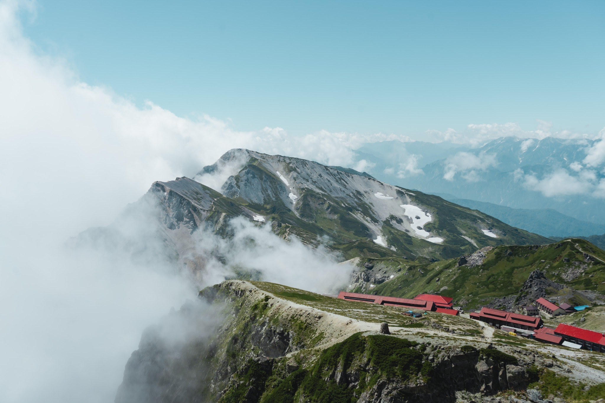
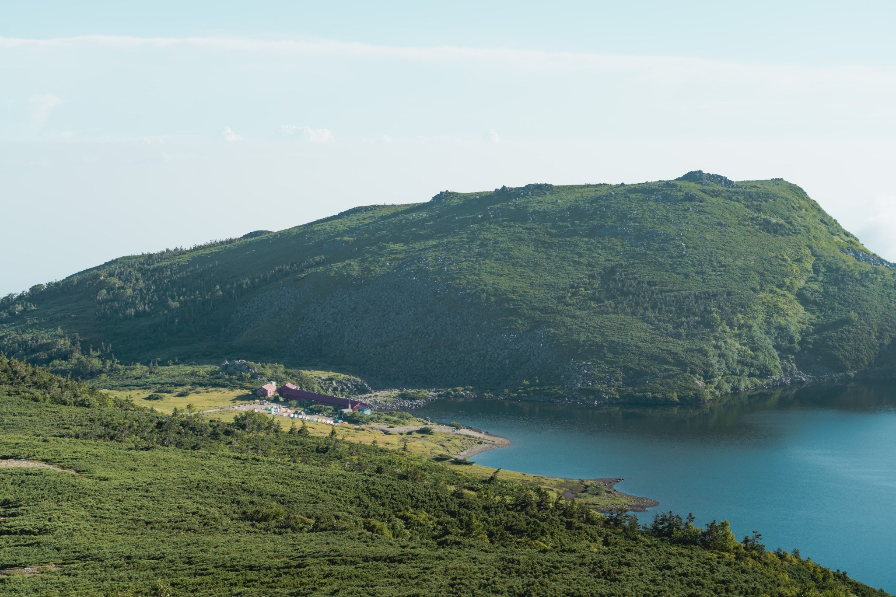
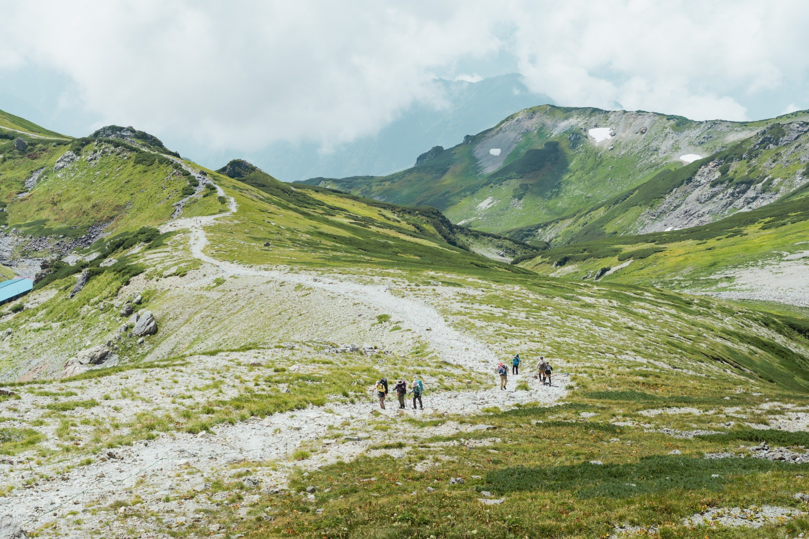
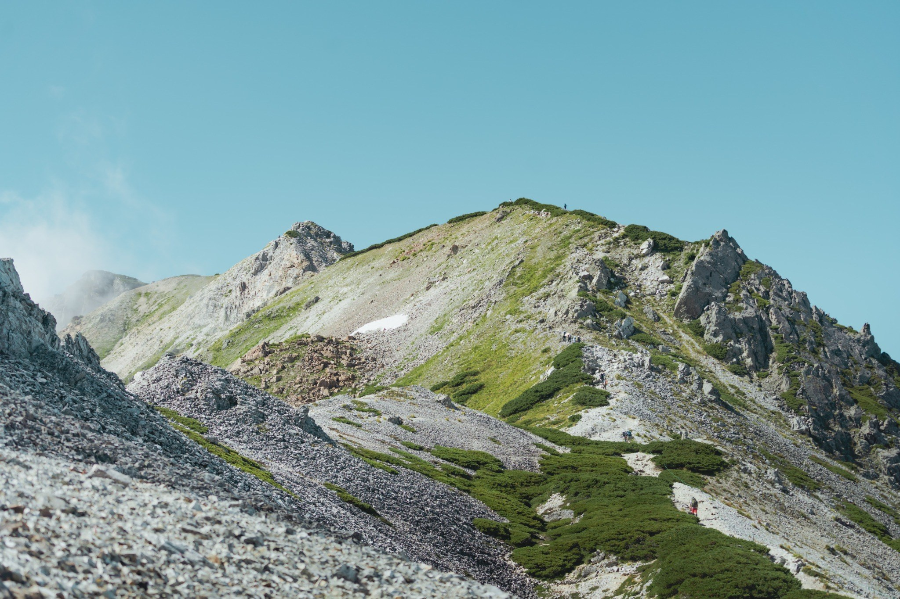
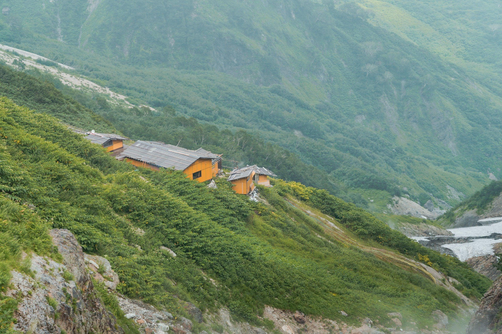
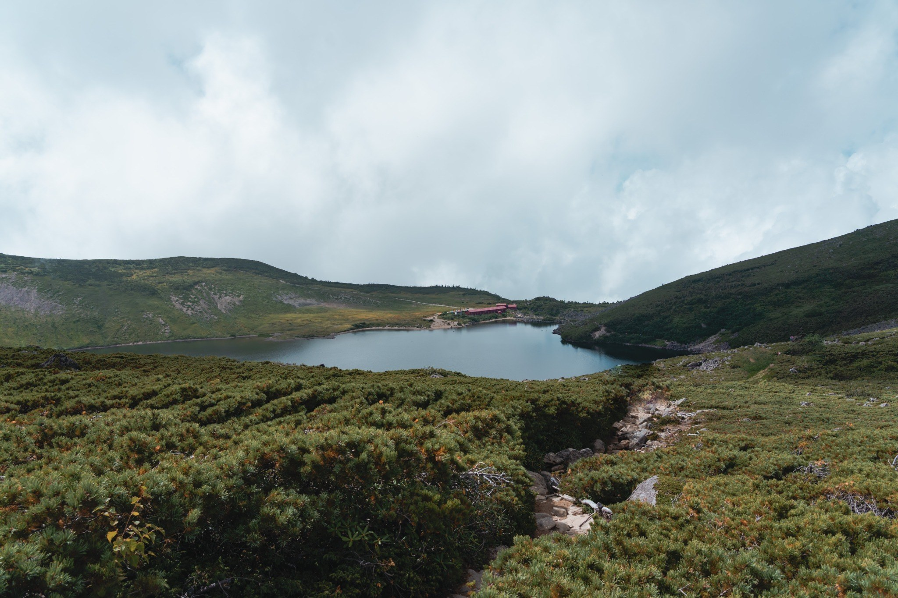
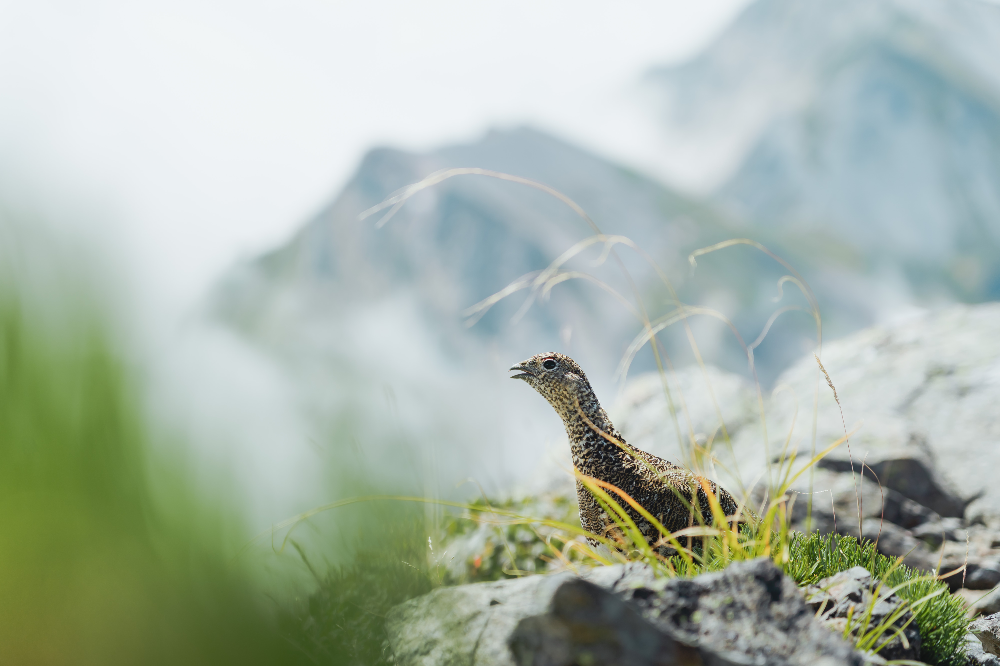

DAY 1｜09/24 白馬車站 → 栂池高原 → 白馬大池山莊
巴士方案08:00
白馬車站集合 集合前請完成早餐、行李寄放、上廁所與裝備整理。
09:20
搭乘巴士前往栂池高原 實際班次以今年官方時刻表為準。
10:00
抵達栂池高原，整理裝備、購票、上廁所
10:20
搭乘栂池纜車系統前往自然園方向
11:00
起登 起登時間偏晚，請配合團隊節奏。
15:30–16:30
抵達白馬大池山莊 山屋供晚餐。

白馬三山路線包含高山稜線、長距離行進、碎石坡、下切路段與山屋生活。請出發前完成裝備、體能、保險與交通確認。
路線建議：白馬車站 → 栂池高原 → 栂池自然園 → 白馬大池 → 小蓮華山 → 白馬岳 → 白馬山莊 → 杓子岳 → 白馬鑓ヶ岳 → 白馬鑓温泉小屋 → 猿倉 → 白馬車站。
巴士交通日，起登較晚，行進需穩定。
高山稜線日，防風、防曬與保暖都重要。
白馬三山核心稜線與下切溫泉小屋。
下山日，膝蓋與腳踝是重點。
以下時間為預估行程時間。巴士與接駁時間請以當季實際班表為準，領隊會於出發前再次確認。
今日交通銜接多，巴士、纜車與起登時間都要控制。起登較晚，行進時請減少不必要停留。

高山稜線日，風大、日曬強，請確實補水、防曬並準備防風保暖層。

經杓子岳與白馬鑓ヶ岳，下切至鑓温泉小屋。下坡疲勞會明顯增加，請保留體力。

最後一天主要是下山，但最容易因疲勞、濕滑或鬆懈而扭傷。請善用登山杖。

白馬三山沿線有開闊草坡、碎石稜線、白馬大池、高山植物與山屋景觀。晴天時展望極佳，但雲霧也可能快速上升，請務必準備防風、保暖與防水裝備。

上山期間不攜帶行李箱。請將行李寄放於白馬車站周邊、前後泊住宿，或依領隊安排處理。
前後泊同飯店最穩定，不怕置物櫃滿位。
適合登機箱或中型行李，大型櫃位有限，旺季可能客滿。

山屋通常可提供充電，但插座有限，需與其他山友共用。請自備充電頭、充電線與行動電源。
山屋可能只有插座，不一定提供 USB 孔，請自備日規可用充電頭。
手機、相機、手錶、頭燈若需充電，線材要自己帶。
不要完全依賴山屋充電，建議 10000–20000mAh。
建議背包重量控制在男性 10kg 內、女性 8kg 內。白馬稜線風大、9 月下旬早晚溫度低，保暖與防水務必完整。
不脫隊、不單獨行動、不隱瞞身體狀況。白馬稜線天氣變化快，若遇強風、雷雨、濃霧或團員狀況不佳，領隊會調整行程。
防風、防曬、防低溫，午後天氣變化時需配合加速通過。
鑓温泉下山路段需注意濕滑、碎石與疲勞。
泡湯請依山屋現場規定，注意補水與保暖。
請在集合前完成早餐、行李寄放、廁所與裝備整理。Day1 採巴士方案，起登時間偏晚，準時集合非常重要。